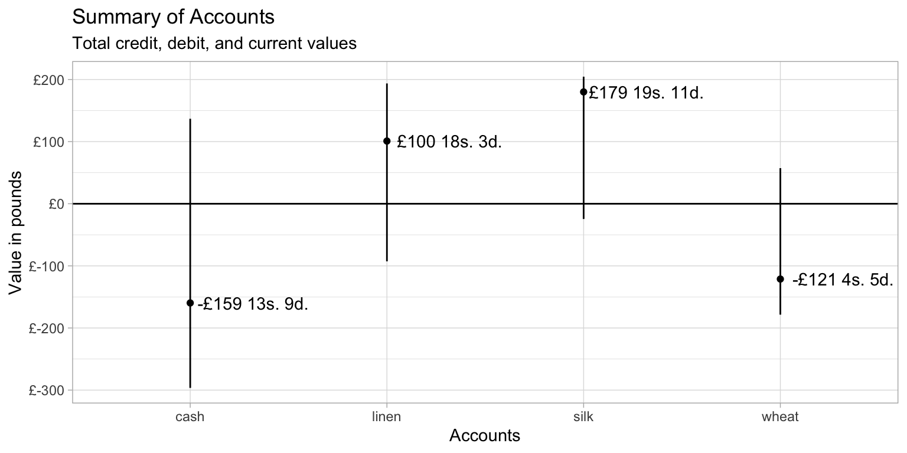

The debkeepr package provides an interface for working with non-decimal currencies that use the tripartite system of pounds, shillings, and pence. debkeepr makes it easier to perform arithmetic operations on non-decimal monetary values and facilitates the analysis and visualization of larger sets of non-decimal values such as those found in historical account books. This is accomplished through the implementation of the deb_lsd and deb_decimal classes of vectors, which are based on the infrastructure provided by the vctrs package. deb_lsd and deb_decimal vectors possess additional metadata to allow them to behave like numeric vectors in many circumstances, while also conforming to the workings of non-decimal currencies.
This vignette lays out the behavior of the deb_lsd and deb_decimal classes, showing where they overlap, how they can work together, and where they diverge. After a short discussion of the historical background of non-decimal currencies, the basic behavior of the two vector classes is laid out. The vignette then covers the workings of the two classes as columns in data frames, including visualizing a small set of example accounts with ggplot2. The overview presented here is extended in two other vignettes that use the data sets that come with the package. For more in depth examples on performing financial calculations on a variety of non-decimal currencies, see the Transactions in Richard Dafforne’s Journal vignette. For a deeper dive into an analysis of a historical account book using debkeepr, see the Analysis of Richard Dafforne’s Journal and Ledger vignette.
debkeepr begin with the prefix deb_, which is short for double-entry bookkeeping.debkeepr contains two data sets from the practice journal and ledger in the third edition of Richard Dafforne’s Merchant’s Mirrour from 1660. Dafforne’s text taught the practices of double-entry bookkeeping and provided a full set of account books to be used for educational purposes.
dafforne_transactions is a transactions data frame with 177 transactions.dafforne_accounts possesses information about the 46 accounts in the journal and ledger.The tripartite non-decimal system of pounds, shillings, and pence dates back to the Carolingian Empire. The primary coin used in the Late Roman Empire was the golden solidus, introduced by Constantine in 309. However, the shrinking of the economy and the political splintering that occurred after the fall of the western Roman Empire diminished the need for gold coins. In the 6th century, the Frankish rulers who took over the Roman mints reacted by creating triens or tremissis, smaller gold coins worth one-third of a solidus. From this point, the solidus was no longer produced as a coin in the western kingdoms. Instead, it continued as a unit of account equivalent to three trientes. In the 7th century even devalued golden trientes proved to be too valuable for the economic needs of the time. Frankish rulers began to produce silver coins based on the size and weight of the triens. The new silver penny was called a denarius, linking it to the old silver coin used in the Roman Republic. The silver penny provided the basis for the monetary system of Western Europe until the revival of gold coins in the 14th century.
As the silver denarius overtook the golden triens, the triens became a unit of account equivalent to four denarii. In this way the solidus transformed into a unit of account representing 12 denarii, even if 12 silver denarii of the 8th century would not have been equivalent to the pure gold solidus of the Late Roman Empire. The use of the libra as a third unit of account derived from the number of silver denarii struck from a pound, or libra, of silver. Though the actual number of coins made from a pound of silver differed over time, the rate of 240 coins from a libra lasted long enough to become fossilized in much of Europe.1 The custom of counting coins in dozens (solidi) and scores of dozens (librae) spread throughout the Carolingian Empire and became engrained in much of Europe. However, by the time that Richard Dafforne wrote on the practice of double-entry bookkeeping in the middle of the seventeenth century, a huge variety of monies of accounts had developed across Europe and beyond, and though many used the 1:20:240 ratios, others used a diversity of bases to represent the shillings and pence units.2
deb_lsd and deb_decimal classesdebkeepr introduces two classes to help deal with two interrelated problems inherent in historical currencies. Historical currencies consisted of three separate non-decimal units, and the bases of the shillings and pence units differed by region, coinage, and era. In other words, the actual value represented by say £3 13s. 4d. cannot be determined without knowing the bases of the shillings and pence units.3 The deb_lsd class maintains the tripartite structure of non-decimal currencies and provides a bases attribute to record the bases for the shillings and pence units. The deb_decimal class represents the currencies in decimalized form. However, it differs from simply converting the value to a numeric vector by tracking the shillings and pence bases and the unit represented in decimalized form (libra, solidus, or denarius) through the bases and unit attributes. Thus, though deb_lsd and deb_decimal vectors of any of the three units will be nominally different, they can represent the same values and currency if the bases are equivalent.4 The print methods for both classes show the bases attribute, and deb_decimal vectors include the unit.
deb_lsd and deb_decimal vectors can be created with the deb_lsd() and deb_decimal() functions respectively. In addition to arguments for the pounds, shillings, and pence values, deb_lsd() has an argument for the bases of the shillings and pence units, which defaults to the most common bases of 20 shillings to the pound and 12 pence to the shilling: c(20, 12). deb_decimal() has the same argument and default for the bases and an additional argument to choose the unit for the decimalized values that defaults to the pounds unit: "l".
library(debkeepr)
# Create deb_lsd vector of length 3 with default bases
(lsd <- deb_lsd(l = c(17, 32, 18),
s = c(13, 11, 10),
d = c(11, 8, 5)))
#> <deb_lsd[3]>
#> [1] 17:13s:11d 32:11s:8d 18:10s:5d
#> # Bases: 20s 12d
# Create deb_decimal vector of length 3 with default bases and unit
(dec <- deb_decimal(x = c(15.825, 19.25, 9.6125)))
#> <deb_decimal[3]>
#> [1] 15.8250 19.2500 9.6125
#> # Unit: libra
#> # Bases: 20s 12d
# Express the same values in solidus and denarius units
(dec_s <- deb_decimal(x = c(316.5, 385, 192.25), unit = "s"))
#> <deb_decimal[3]>
#> [1] 316.50 385.00 192.25
#> # Unit: solidus
#> # Bases: 20s 12d
(dec_d <- deb_decimal(x = c(3798, 4620, 2307), unit = "d"))
#> <deb_decimal[3]>
#> [1] 3798 4620 2307
#> # Unit: denarius
#> # Bases: 20s 12dThe bases argument makes it possible to create deb_lsd and deb_decimal vectors that represent currencies that use non-standard bases for the shillings and pence units such as the Polish florin found in Dafforne’s practice journal in which a florin consisted of 30 gros of 18 denars.
# Create deb_lsd vector of length 3 with bases of Polish florin
(lsd_polish <- deb_lsd(l = c(32, 12, 26),
s = c(15, 1, 20),
d = c(5, 13, 8),
bases = c(30, 18)))
#> <deb_lsd[3]>
#> [1] 32:15s:5d 12:1s:13d 26:20s:8d
#> # Bases: 30s 18d
# Create deb_decimal vector of length 3 with bases of Polish florin
(dec_polish <- deb_decimal(x = c(15.825, 19.25, 9.6125),
bases = c(30, 18)))
#> <deb_decimal[3]>
#> [1] 15.8250 19.2500 9.6125
#> # Unit: libra
#> # Bases: 30s 18ddeb_lsd and deb_decimal classesWhy two different classes to represent the same basic information? The goal of debkeepr is to integrate tripartite non-decimal currencies into the decimalized world of R. The deb_lsd class does this while maintaining the tripartite structure of historical non-decimal currencies, but there remain certain limitations to such an approach. The deb_decimal class helps to minimize these limitations. The following list provides an overview of the differences of the two classes that are discussed in further detail in the rest of the vignette.
deb_lsd class has the advantage of maintaining the structure and values used by non-decimal currencies, making it easier to identify and present such values.deb_decimal implements a wider array of mathematical functions and arithmetic operations than deb_lsd.vctrs package more fully — which should happen with version 0.9.0 — deb_lsd vectors do not work with the dplyr functions mutate(), summarise(), and arrange(). However, the full complement of dplyr functions work with deb_decimal vectors.deb_lsd vectors. However, deb_decimal vectors work properly with ggplot2, though explicitly identifying the scale as continuous — with scale_y_continuous() or scale_x_continuous() — is needed to avoid the appearance of a message.deb_as_lsd() and deb_as_decimal() make it possible to move between the two classes without losing any data.deb_lsd and deb_decimal vectors cannot be combined in a single function if they have different bases. The only way to transform the bases of deb_lsd and deb_decimal vectors is explicitly with deb_convert_bases().One of the most basic activities when working with vectors is combining vectors of the same or similar classes or converting a vector from one class to another. Coercion occurs when vectors are converted implicitly, such as with c(). Casting denotes explicit conversion with functions that usually begin with as, such as as.numeric() or as.character(). The debkeepr classes follow a hierarchy in which numeric() coerces to deb_decimal() coerces to deb_lsd(). Coercion with any other type of vector fails.5 debkeepr also implements casting methods between deb_lsd and deb_decimal vectors, to and from numeric vectors, and to character vectors.
Coercion hierarchy: numeric() -> deb_decimal() -> deb_lsd().
# Combine deb_lsd and deb_lsd
c(lsd, deb_lsd(l = 5, s = 13, d = 4))
#> <deb_lsd[4]>
#> [1] 17:13s:11d 32:11s:8d 18:10s:5d 5:13s:4d
#> # Bases: 20s 12d
# Combine deb_decimal and deb_decimal
num <- 17 / 3
c(dec, deb_decimal(num))
#> <deb_decimal[4]>
#> [1] 15.825000 19.250000 9.612500 5.666667
#> # Unit: libra
#> # Bases: 20s 12d
c(dec_s, deb_decimal(num, unit = "s"))
#> <deb_decimal[4]>
#> [1] 316.500000 385.000000 192.250000 5.666667
#> # Unit: solidus
#> # Bases: 20s 12d
# Combine deb_lsd, deb_decimal, and numeric
c(lsd, dec, num)
#> <deb_lsd[7]>
#> [1] 17:13s:11d 32:11s:8d 18:10s:5d 15:16s:6d 19:5s:0d 9:12s:3d
#> [7] 5:13s:4d
#> # Bases: 20s 12dIt is also possible to combine deb_decimal vectors that have a different unit so long as their bases are equivalent.6 This follows a set hierarchy that moves towards the higher unit: denarius ("d") -> solidus ("s") -> libra ("l").
# denarius -> solidus
c(deb_decimal(x = 1360, unit = "d"), dec_s)
#> <deb_decimal[4]>
#> [1] 113.3333 316.5000 385.0000 192.2500
#> # Unit: solidus
#> # Bases: 20s 12d
# denarius -> libra
c(deb_decimal(x = 1360, unit = "d"), dec)
#> <deb_decimal[4]>
#> [1] 5.666667 15.825000 19.250000 9.612500
#> # Unit: libra
#> # Bases: 20s 12d
# solidus -> libra
c(deb_decimal(x = 340 / 3, unit = "s"), dec)
#> <deb_decimal[4]>
#> [1] 5.666667 15.825000 19.250000 9.612500
#> # Unit: libra
#> # Bases: 20s 12dCare needs to be taken when combining deb_lsd and/or deb_decimal vectors with a base R class using c(); c(deb_lsd(), numeric()) is not equal to c(numeric(), deb_lsd()). c() does not find the common class for the objects if the first element is a base class. Instead, it forces vectors to conform to its internal hierarchy by stripping attributes. Thus, c(numeric(), deb_lsd()) results in a list with the underlying data of deb_lsd(), and c(numeric(), deb_decimal()) produces a numeric vector. This can be avoided with the use of vec_c() from the vctrs package, which first finds the common class for all elements.7
# Incorrect results with base class as first element
c(num, lsd)
#> [[1]]
#> [1] 5.666667
#>
#> $l
#> [1] 17 32 18
#>
#> $s
#> [1] 13 11 10
#>
#> $d
#> [1] 11 8 5
c(num, dec)
#> [1] 5.666667 15.825000 19.250000 9.612500
# Consistent with vec_c()
library(vctrs)
vec_c(num, lsd)
#> <deb_lsd[4]>
#> [1] 5:13s:4d 17:13s:11d 32:11s:8d 18:10s:5d
#> # Bases: 20s 12d
vec_c(num, dec)
#> <deb_decimal[4]>
#> [1] 5.666667 15.825000 19.250000 9.612500
#> # Unit: libra
#> # Bases: 20s 12dAn important aspect of deb_lsd and deb_decimal vectors is that they cannot be combined in a single function call if they have different bases. Vectors with mismatched bases represent different currencies and so cannot be combined without the user performing an exchange between the two currencies. The only way to transform the bases of deb_lsd and deb_decimal vectors is explicitly with deb_convert_bases(), as shown in greater detail below.
Whereas coercion occurs implicitly, casting explicitly changes the class of a vector. deb_lsd and deb_decimal vectors can be cast to and from each other, to and from numeric vectors, and to character vectors. Because deb_lsd and deb_decimal vectors have different capabilities, casting between the classes without any loss of metadata is important. The ability to cast deb_lsd and deb_decimal vectors to and from numeric vectors provides an outlet for any missing functionality in the two debkeepr classes. The drawback to casting between debkeepr classes and numeric is that the user needs to keep track of the bases and unit on their own. Finally, casting to a character vector provides a simple outlet to print values, but, for presentation of the data, deb_text() provides a more flexible manner to nicely format deb_lsd and deb_decimal vectors.
deb_lsd() to …
deb_decimal() to …
numeric() to …
# Cast between deb_lsd and deb_decimal
deb_as_lsd(dec)
#> <deb_lsd[3]>
#> [1] 15:16s:6d 19:5s:0d 9:12s:3d
#> # Bases: 20s 12d
deb_as_decimal(lsd)
#> <deb_decimal[3]>
#> [1] 17.69583 32.58333 18.52083
#> # Unit: libra
#> # Bases: 20s 12d
# unit is automatically taken into account
deb_as_lsd(dec_s)
#> <deb_lsd[3]>
#> [1] 15:16s:6d 19:5s:0d 9:12s:3d
#> # Bases: 20s 12d
# Can cast to any unit of deb_decimal
deb_as_decimal(lsd, unit = "s")
#> <deb_decimal[3]>
#> [1] 353.9167 651.6667 370.4167
#> # Unit: solidus
#> # Bases: 20s 12d
deb_as_decimal(lsd, unit = "d")
#> <deb_decimal[3]>
#> [1] 4247 7820 4445
#> # Unit: denarius
#> # Bases: 20s 12d
# Cast to and from numeric
deb_as_lsd(c(15.825, 19.25, 9.6125))
#> <deb_lsd[3]>
#> [1] 15:16s:6d 19:5s:0d 9:12s:3d
#> # Bases: 20s 12d
deb_as_decimal(c(15.825, 19.25, 9.6125))
#> <deb_decimal[3]>
#> [1] 15.8250 19.2500 9.6125
#> # Unit: libra
#> # Bases: 20s 12d
as.numeric(lsd)
#> [1] 17.69583 32.58333 18.52083
as.numeric(dec)
#> [1] 15.8250 19.2500 9.6125
# Cast to character
as.character(lsd)
#> [1] "17:13s:11d" "32:11s:8d" "18:10s:5d"
as.character(dec)
#> [1] "15.825" "19.25" "9.6125"At the heart of debkeepr’s attempt to simplify calculations of non-decimal currencies and integrate them into the structure of R is the concept of normalization. Normalization is the process of converting a set of compound units to a standard form consistent with the bases for each unit in a manner similar to “carrying over” digits in decimal arithmetic. Even the simplest arithmetic operations can be tricky with non-decimal currencies, especially for those schooled in decimal arithmetic. For example, adding together a set of values by hand might result in the non-standard form of £132 53s. 35d. in a currency with the standard bases of 20 shillings per pound and 12 pence per shilling. Normalizing the value by performing integer division on the shillings and pence values by their respective bases, keeping the remainder, and carrying over the quotient to the next unit results in the standardized value of £134 15s. 11d. The process is not difficult, but it is cumbersome and error prone.
debkeepr simplifies the procedure with the deb_normalize() function and implements normalization on all mathematical operations with deb_lsd vectors, ensuring that normalized values are always returned. For one off calculations, deb_normalize() also accepts numeric vectors of length three, which is essentially a short cut for deb_normalize(deb_lsd(l, s, d)).
# Normalize £132 53s. 35d.
x <- deb_lsd(132, 53, 35)
deb_normalize(x)
#> <deb_lsd[1]>
#> [1] 134:15s:11d
#> # Bases: 20s 12d
# Normalize numeric vector
deb_normalize(c(132, 53, 35))
#> <deb_lsd[1]>
#> [1] 134:15s:11d
#> # Bases: 20s 12d
# The process is the same for non-standard bases such as Polish florin
# Compare this to deb_normalize(x)
deb_lsd(132, 53, 35, bases = c(30, 18)) %>%
deb_normalize()
#> <deb_lsd[1]>
#> [1] 133:24s:17d
#> # Bases: 30s 18ddebkeepr implements a wide array of mathematical functions and arithmetic operations for the deb_lsd and deb_decimal classes. The deb_decimal class implements methods for the full range of the Summary and Math group generics, while deb_lsd does so for a select subset of these functions. The primary functions that are not implemented for either class include median(), quantile(), and summary(). deb_lsd, deb_decimal, and numeric vectors can be combined in mathematical functions and follow the same hierarchy as coercion: numeric() -> deb_decimal() -> deb_lsd(). Most of the mathematical functions act as expected with deb_lsd vectors. One exception is the round family of functions, which act on the denarius unit. As always, deb_lsd and deb_decimal vectors with different bases cannot be combined in either mathematical functions or arithmetic operations.
deb_lsd vectorssum(), any(), and all().abs(), round(), signif(), ceiling(), floor(), trunc(), cummax(), cummin(), and cumsum().mean(), is.nan(), is.finite(), and is.infinite().# Mathematical functions
sum(lsd)
#> <deb_lsd[1]>
#> [1] 68:16s:0d
#> # Bases: 20s 12d
sum(dec)
#> <deb_decimal[1]>
#> [1] 44.6875
#> # Unit: libra
#> # Bases: 20s 12d
sum(lsd, dec)
#> <deb_lsd[1]>
#> [1] 113:9s:9d
#> # Bases: 20s 12d
mean(lsd)
#> <deb_lsd[1]>
#> [1] 22:18s:8d
#> # Bases: 20s 12d
# Round works on denarius unit of deb_lsd vector and is normalized
round(deb_lsd(9, 19, 11.825))
#> <deb_lsd[1]>
#> [1] 10:0s:0d
#> # Bases: 20s 12ddeb_lsd and deb_decimal vectorsdeb_lsd, deb_decimal, and numeric vectors can be combined in various ways in arithmetic operations, producing different results depending on the input types and the operation performed. Note in particular that a wider range of operators can be used with deb_decimal and numeric vectors than deb_lsd and numeric vectors.8
deb_lsd() and deb_lsd(): +, -, and /
deb_lsd vector; the last returns a numeric vector.deb_lsd() and numeric(): * and /
deb_lsd vector.numeric() and deb_lsd(): * and /
deb_lsd vector.deb_decimal() and deb_decimal(): +, -, and /
deb_lsd vector; the last returns a numeric vector.deb_decimal() and numeric(): +, -, /, *, ^, %%, and %/%
deb_decimal vector.numeric() and deb_decimal(): +, -, * and /
deb_decimal vector.deb_lsd() and deb_decimal(): +, -, and /
deb_lsd vector; the last returns a numeric vector.deb_decimal() and deb_lsd(): +, -, and /
deb_lsd vector; the last returns a numeric vector.# deb_lsd and deb_decimal vectors
lsd1 <- deb_lsd(15, 15, 9)
lsd2 <- deb_lsd(6, 13, 4)
dec1 <- deb_decimal(15.7875)
dec2 <- deb_decimal(20 / 3)
# deb_lsd and deb_lsd
lsd1 + lsd2
#> <deb_lsd[1]>
#> [1] 22:9s:1d
#> # Bases: 20s 12d
lsd1 / lsd2
#> [1] 2.368125
# deb_decimal and deb_decimal
dec1 - dec2
#> <deb_decimal[1]>
#> [1] 9.120833
#> # Unit: libra
#> # Bases: 20s 12d
# deb_lsd, deb_decimal, and numeric
lsd2 / 2
#> <deb_lsd[1]>
#> [1] 3:6s:8d
#> # Bases: 20s 12d
dec1 + 5.25
#> <deb_decimal[1]>
#> [1] 21.0375
#> # Unit: libra
#> # Bases: 20s 12d
18 - dec2
#> <deb_decimal[1]>
#> [1] 11.33333
#> # Unit: libra
#> # Bases: 20s 12d
dec1 * 3
#> <deb_decimal[1]>
#> [1] 47.3625
#> # Unit: libra
#> # Bases: 20s 12d
# deb_lsd and deb_decimal
lsd1 + dec2
#> <deb_lsd[1]>
#> [1] 22:9s:1d
#> # Bases: 20s 12d
lsd1 / dec1
#> [1] 1Closely related to mathematical functions and arithmetic operations is the task of testing equality and comparison. debkeepr permits testing equality and comparison between deb_lsd, deb_decimal, and numeric vectors. It is possible to compare deb_decimal vectors with different units, but doing so with vectors of different bases will throw an error.
# Comparison
lsd1 < lsd2
#> [1] FALSE
lsd1 == dec1
#> [1] TRUE
lsd2 > 23.5
#> [1] FALSE
dec1 < deb_decimal(3390, unit = "d")
#> [1] FALSE
# Cannot compare vectors with different bases
lsd1 > lsd_polish
#> Error: `bases` attributes must be equal to combine <deb_lsd> or <deb_decimal> objects.
# Maximum and minimum
max(lsd)
#> <deb_lsd[1]>
#> [1] 32:11s:8d
#> # Bases: 20s 12d
min(dec_polish)
#> <deb_decimal[1]>
#> [1] 9.6125
#> # Unit: libra
#> # Bases: 30s 18d
# Checking for unique values takes into account normalization
unique(c(lsd1, deb_lsd(12, 71, 57)))
#> <deb_lsd[1]>
#> [1] 15:15s:9d
#> # Bases: 20s 12dAs introduced above, all functions that take two debkeepr vectors check to ensure that the bases of the vectors are equivalent. Any function call that combines vectors with different bases throws an error. debkeepr is less strict with deb_decimal vectors that have a different unit since a unit is a nominal representation whose relationship to the other units is known through the bases. In contrast, bases directly affect the underlying value, and the relationship between currencies of different bases cannot be determined through the objects themselves.
With these constraints, debkeepr has two ways to explicitly convert the bases and unit of deb_lsd and deb_decimal vectors: deb_convert_bases() and deb_convert_unit(). deb_convert_bases() takes a deb_lsd or deb_decimal vector and converts the value to the bases contained in the to argument. This will likely be done alongside multiplication of an exchange rate between the two currencies. The Transactions in Richard Dafforne’s Journal vignette has a number of examples of this process. deb_convert_unit() is simpler in that it uses the bases of a deb_decimal vector to calculate the conversion to a different unit.
A fairly simple example is an exchange between pounds Flemish and guilders from Holland. The two currencies had different bases; guilders possessed the non-standard base of 16 for the denarius unit. However, the currencies were tied together at a rate of six guilders to the £1 Flemish.
# Convert pounds Flemish to guilders
deb_convert_bases(lsd, to = c(20, 16)) * 6
#> <deb_lsd[3]>
#> [1] 106:3s:8d 195:10s:0d 111:2s:8d
#> # Bases: 20s 16d
deb_convert_bases(dec, to = c(20, 16)) * 6
#> <deb_decimal[3]>
#> [1] 94.950 115.500 57.675
#> # Unit: libra
#> # Bases: 20s 16d
# Convert units
deb_convert_unit(dec, to = "d")
#> <deb_decimal[3]>
#> [1] 3798 4620 2307
#> # Unit: denarius
#> # Bases: 20s 12d
# Converting units maintains equality; converting bases does not
dec == deb_convert_unit(dec, to = "d")
#> [1] TRUE TRUE TRUE
lsd == deb_convert_bases(lsd, to = c(20, 16))
#> Error: `bases` attributes must be equal to combine <deb_lsd> or <deb_decimal> objects.deb_lsd and deb_decimal columnsThus far this vignette has only dealt with debkeepr objects as vectors, but, of course, these vectors also work as columns in data frames. deb_lsd and deb_decimal columns are essential to achieve debkeepr’s goal of facilitating reproducible analysis and visualization of larger sets of values found in account books. This section discusses how to create and manipulate data frames with debkeepr columns, the current differences between deb_lsd and deb_decimal columns in dplyr, and the process of visualizing the values with ggplot2.
The first task is to create a deb_lsd or deb_decimal column. Such a column can be created with a normal call to data.frame() or tibble() and a deb_lsd or deb_decimal vector. However, larger sets of non-decimal values will often be created through the process of transcribing historical data into a spreadsheet of some form. It is recommended to enter the different units into separate columns. The data can then be read into R and the separate variables transformed into a deb_lsd column with deb_gather_lsd(). This is the process used to create the dafforne_transactions data that comes with the debkeepr package. To restore the data to its original form with three columns for the three units the deb_spread_lsd() function can be used.
# Create data frame with deb_lsd vector
tibble(id = 1:3, lsd = lsd)
#> # A tibble: 3 x 2
#> id lsd
#> <int> <lsd[20s:12d]>
#> 1 1 17:13s:11d
#> 2 2 32:11s:8d
#> 3 3 18:10s:5d
# Data frame from separate unit columns with randomly created data
set.seed(240)
raw_data <- tibble(id = 1:10,
pounds = sample(20:100, 10, replace = TRUE),
shillings = sample(1:19, 10, replace = TRUE),
pence = sample(1:11, 10, replace = TRUE))
(lsd_tbl <- deb_gather_lsd(raw_data, l = pounds, s = shillings, d = pence,
replace = TRUE))
#> # A tibble: 10 x 2
#> id lsd
#> <int> <lsd[20s:12d]>
#> 1 1 24:10s:9d
#> 2 2 34:14s:4d
#> 3 3 83:4s:4d
#> 4 4 41:13s:2d
#> 5 5 99:8s:11d
#> 6 6 92:14s:7d
#> 7 7 57:6s:5d
#> 8 8 48:12s:2d
#> 9 9 53:11s:2d
#> 10 10 56:9s:7ddeb_lsd and deb_decimal columns with dplyr
Currently, deb_lsd vectors are not fully integrated into dplyr, and so functions such as summarise(), mutate(), and arrange() do not work with deb_lsd columns. It is possible to get around this temporary limitation by mutating a deb_lsd column to deb_decimal, which largely behaves as a normal numeric variable. An equivalent deb_lsd column can always be created from a deb_decimal column with base R commands.
# filter() works on a deb_lsd column
lsd_tbl %>%
filter(lsd > 75)
#> # A tibble: 3 x 2
#> id lsd
#> <int> <lsd[20s:12d]>
#> 1 3 83:4s:4d
#> 2 5 99:8s:11d
#> 3 6 92:14s:7d
# mutate() does not
lsd_tbl %>%
mutate(lsd2 = lsd * 2)
#> Error: Column `lsd2` must be length 10 (the number of rows) or one, not 3
# Fix this by creating a deb_decimal column
(lsd2_tbl <- lsd_tbl %>%
mutate(dec = deb_as_decimal(lsd),
dec2 = dec * 2))
#> # A tibble: 10 x 4
#> id lsd dec dec2
#> <int> <lsd[20s:12d]> <l[20s:12d]> <l[20s:12d]>
#> 1 1 24:10s:9d 24.53750 49.07500
#> 2 2 34:14s:4d 34.71667 69.43333
#> 3 3 83:4s:4d 83.21667 166.43333
#> 4 4 41:13s:2d 41.65833 83.31667
#> 5 5 99:8s:11d 99.44583 198.89167
#> 6 6 92:14s:7d 92.72917 185.45833
#> 7 7 57:6s:5d 57.32083 114.64167
#> 8 8 48:12s:2d 48.60833 97.21667
#> 9 9 53:11s:2d 53.55833 107.11667
#> 10 10 56:9s:7d 56.47917 112.95833
# Recreate modified deb_lsd column
lsd2_tbl[["lsd2"]] <- deb_as_lsd(lsd2_tbl[["dec2"]])
lsd2_tbl
#> # A tibble: 10 x 5
#> id lsd dec dec2 lsd2
#> <int> <lsd[20s:12d]> <l[20s:12d]> <l[20s:12d]> <lsd[20s:12d]>
#> 1 1 24:10s:9d 24.53750 49.07500 49:1s:6d
#> 2 2 34:14s:4d 34.71667 69.43333 69:8s:8d
#> 3 3 83:4s:4d 83.21667 166.43333 166:8s:8d
#> 4 4 41:13s:2d 41.65833 83.31667 83:6s:4d
#> 5 5 99:8s:11d 99.44583 198.89167 198:17s:10d
#> 6 6 92:14s:7d 92.72917 185.45833 185:9s:2d
#> 7 7 57:6s:5d 57.32083 114.64167 114:12s:10d
#> 8 8 48:12s:2d 48.60833 97.21667 97:4s:4d
#> 9 9 53:11s:2d 53.55833 107.11667 107:2s:4d
#> 10 10 56:9s:7d 56.47917 112.95833 112:19s:2ddebkeepr has a family of functions designed to work with a specific type of data frame that debkeepr refers to as a transactions data frame that has a structure similar to an account book. Transactions data frames possess at minimum “credit” and “debit” variables to record the creditor and debtor accounts of each transaction — the accounts from which a value is taken and to which it is given — and the value of the transactions in a deb_lsd or deb_decimal column. For a full explanation of how this family of functions works, see ?deb_account and the Analysis of Richard Dafforne’s Journal and Ledger vignette. It is possible to create a simple transactions data frame from lsd_tbl by adding “credit” and “debit” variables. For instance, a merchant might trade in three commodities that each have their own account (let’s say wheat, silk, and linen) and a cash account.
# Create transactions data frame
accounts <- c("wheat", "silk", "linen", "cash")
set.seed(24)
(transactions <- lsd_tbl %>%
add_column(credit = sample(accounts, 10, replace = TRUE),
debit = sample(accounts, 10, replace = TRUE),
.before = 2))
#> # A tibble: 10 x 4
#> id credit debit lsd
#> <int> <chr> <chr> <lsd[20s:12d]>
#> 1 1 linen silk 24:10s:9d
#> 2 2 linen wheat 34:14s:4d
#> 3 3 cash cash 83:4s:4d
#> 4 4 linen wheat 41:13s:2d
#> 5 5 silk cash 99:8s:11d
#> 6 6 linen linen 92:14s:7d
#> 7 7 wheat cash 57:6s:5d
#> 8 8 silk wheat 48:12s:2d
#> 9 9 cash wheat 53:11s:2d
#> 10 10 silk cash 56:9s:7dWith the properly structured data frame, debkeepr makes it easy to find information about the accounts. For example, deb_account_summary() finds the total credit, total debit, and current value of each account. Note that the account family of functions can take either a deb_lsd or a deb_decimal column.
(trans_summary <- deb_account_summary(transactions, lsd = lsd,
credit = credit, debit = debit))
#> # A tibble: 4 x 4
#> account_id credit debit current
#> <chr> <lsd[20s:12d]> <lsd[20s:12d]> <lsd[20s:12d]>
#> 1 cash 136:15s:6d 296:9s:3d -159:-13s:-9d
#> 2 linen 193:12s:10d 92:14s:7d 100:18s:3d
#> 3 silk 204:10s:8d 24:10s:9d 179:19s:11d
#> 4 wheat 57:6s:5d 178:10s:10d -121:-4s:-5dggplot2
deb_account_summary() provides a good basis for a visual overview of the accounts in a transactions data frame. However, alterations to trans_summary have to be made to prepare it for plotting with ggplot(). ggplot2 does not know how to pick a scale for deb_lsd vectors, but deb_decimal vectors work as expected.9 It is therefore necessary to cast the deb_lsd variables to deb_decimal, either before or within the ggplot() call. The only context in which casting to deb_decimal results in any loss of information is in labelling the plotted values. However, this can be rectified through the deb_text() function, which provides a flexible way to format deb_lsd and deb_decimal vectors as text. The following command makes these changes while also converting the “debit” column to negative values for the purpose of distinguishing them from the credit values.
dec_summary <- trans_summary %>%
mutate_if(deb_is_lsd, deb_as_decimal) %>%
mutate(debit = -debit,
current_text = deb_text(deb_as_lsd(current)))At this point, the data can be plotted as if the deb_decimal values are numeric. The only notable difference is the need to explicitly call scale_y_continuous() to avoid a message, but, in this case, scale_y_continuous() is also used to label the axis with the pound sign.
ggplot(data = dec_summary) +
geom_linerange(aes(x = account_id, ymin = debit, ymax = credit)) +
geom_point(aes(x = account_id, y = current)) +
geom_text(aes(x = account_id, y = current, label = current_text), nudge_x = 0.32) +
scale_y_continuous(labels = scales::dollar_format(prefix = "£")) +
geom_hline(yintercept = 0) +
labs(x = "Accounts",
y = "Value in pounds",
title = "Summary of Accounts",
subtitle = "Total credit, debit, and current values") +
theme_light()
This vignette has gone through the basic structures and workings of debkeepr and the deb_lsd and deb_decimal classes. It has outlined the difficulties inherent in working with non-decimal currencies in decimalized computing environments and the ways that debkeepr seeks to overcome these problems to integrate the study and analysis of historical non-decimal currencies into the methodologies of Digital Humanities and the practices of reproducible research. For further examples of the use cases of debkeepr and how the package promotes practices of reproducible research that involves historical non-decimal currencies, see the Transactions in Richard Dafforne’s Journal and Analysis of Richard Dafforne’s Journal and Ledger vignettes.
Using the bases of 20 and 12 also had certain arithmetic advantages.↩
For more information about the development of the system of pounds, shillings, and pence and medieval monetary systems more generally see Peter Spufford, Money and its Use in Medieval Europe (Cambridge: Cambridge University Press, 1988).↩
Does 13s. 4d. represent 2/3 of £1, as is the case with the standard bases of 20s. 12d., or it might represent about 0.44 of £1 with the Polish florin from Dafforne’s journal that has units of 30s. 18d.↩
It is for this reason that any function call that combines debkeepr vectors with different bases throws an error, while deb_decimal vectors with a different unit can be safely combined. The nominal difference between the three units is contained in the bases of the shillings and pence units.↩
See the S3 vectors vignette in the vctrs package for a fuller explanation of these terms. For a discussion of the goals of type stability for coercion, see the Type and size stability vignette in the same package.↩
Coercion of deb_decimal vectors with different units is implemented because, like deb_lsd and deb_decimal vectors, deb_decimal vectors with different units differ nominally, but, so long as they have equivalent bases, they represent values of the same currency.↩
For further details on the issues with and inconsistencies of c(), as well as the reasoning behind the the implementation of vctrs::vec_c(), see the Type and size stability vignette in the vctrs package.↩
The difference between the behavior of deb_lsd and deb_decimal vectors with numeric vectors is primarily an implementation detail. It is a recognition of the closer relationship of deb_decimal to numeric vectors than deb_lsd to numeric vectors and of the relative ease of casting back and forth between deb_lsd to deb_decimal vectors.↩
In contrast to ggplot2, base R plot() correctly plots deb_lsd vectors without any modifications.↩